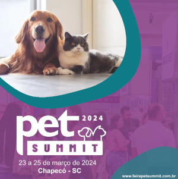
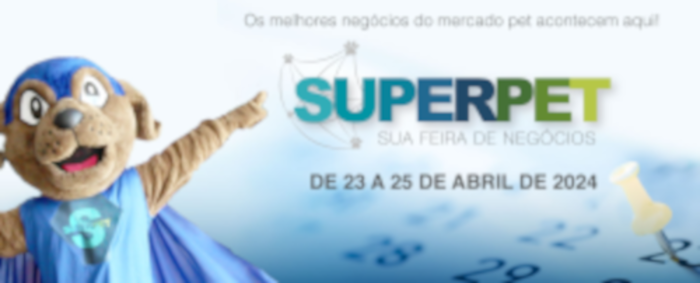

Encontre seu novo melhor amigo aqui.
Logo abaixo estão os eventos de adoção disponíveis.
Encontre o mais próximo de você!
Eventos
Pet Summit 2024 – Chapecó, SC (23 a 25 de março de 2024) Para mais infomrações clique aqui.
O Pet Summit, realizado no Centro de Cultura e Eventos Plínio Arlindo de Nês em Chapecó, SC, é um evento abrangente dedicado a explorar diversas áreas do universo PET. Com uma programação que inclui palestras, workshops e demonstrações práticas, o summit oferece uma excelente oportunidade para que profissionais e entusiastas de animais ampliem seus conhecimentos e interajam com especialistas do setor.
Superpet 2024 – Campinas, SP (23 a 25 de abril de 2024)  Para mais informações clique aquiA Superpet 2024 será realizada na Expo Dom Pedro, em Campinas, SP, destacando-se pela ênfase na inovação tecnológica e na sustentabilidade na indústria PET. Com uma ampla gama de expositores, esta feira oferece aos participantes uma visão abrangente das mais recentes tendências em produtos e serviços para animais de estimação.
Feipet 2024 – Novo Hamburgo, RS (09 a 11 de junho de 2024) Para mais informações clique aqui.
Para mais informações clique aqui.
A Feipet 2024, que ocorrerá na FENAC em Novo Hamburgo, RS, é um evento essencial para quem busca as últimas novidades no mercado PET. Além de apresentar uma vasta exposição de produtos, a feira oferece valiosas oportunidades de networking e discussões sobre questões fundamentais relacionadas ao bem-estar e à saúde animal.
Pet Fair – Serra, ES (06 e 07 de julho de 2024) Para mais informações clique aqui.
Para mais informações clique aqui.
A Pet Fair ES é um evento que reúne toda a família! Com um design inovador, oferece uma experiência única para diversos públicos: animais de estimação, seus donos, profissionais do setor, estudantes de Medicina Veterinária, groomers, defensores da causa animal e amantes de pets.
Amigos Pet 2024 – Campinas, SP (23 a 25 de julho de 2024) Para mais informações clique aqui.
Para mais informações clique aqui.
A Expo Dom Pedro, em Campinas, SP, será novamente o local da feira Amigos Pet. Focada na interação entre animais e humanos, a feira se destaca por suas atividades práticas, como competições e demonstrações ao vivo.
MedVep 2024 – Curitiba, PR (25 a 27 de julho de 2024) Para mais informações clique aqui.
Para mais informações clique aqui.
O Viasoft Experience, em Curitiba, PR, sediará a MedVep 2024, uma feira que une o campo da medicina veterinária às últimas inovações em produtos e tecnologias para animais de estimação. Profissionais da saúde animal e entusiastas do setor encontrarão aqui uma plataforma exclusiva para atualização e aprendizado.
Pet South America 2024 – São Paulo, SP (14 a 16 de agosto de 2024) Para mais informações clique aqui.
Para mais informações clique aqui.
O São Paulo Expo abrigará a Pet South America 2024, uma das maiores feiras do mercado PET na América do Sul. Com uma grande variedade de expositores nacionais e internacionais, esta feira oferece aos participantes a oportunidade de explorar as mais recentes tendências globais na indústria de animais de estimação.
Petnor 2024 – Recife, PE (03 a 05 de novembro de 2024) Para mais infomrações clique aqui.
Para mais infomrações clique aqui.
Encerrando o ano, o Centro de Convenções de Pernambuco, em Recife, PE, será o local da Petnor 2024. Esta feira oferecerá aos participantes uma última oportunidade de descobrir as inovações e tendências que moldarão o mercado PET nos próximos anos.